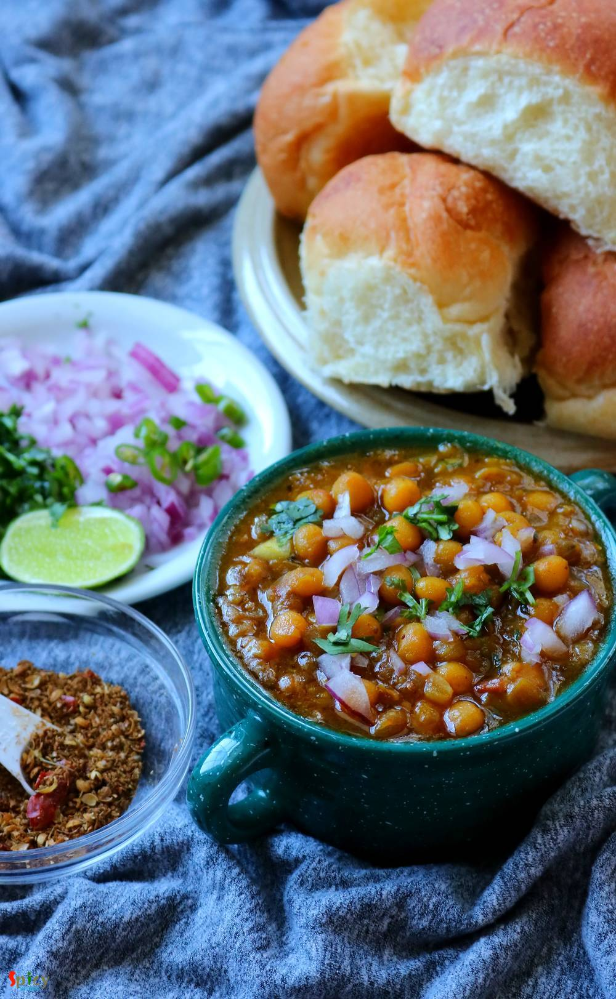

Simple and Easy Recipes
Ghugni / Yellow peas curry
© 2016 Spicy World, Published on: Oct 16, 2018
In Bengal, Durgapujo is incomplete without Ghugni. During pandal hopping one of the best selling street food after phuchka is Ghugni. Not only as a street food, on the auspicious day of Bijoya Doshomi (last day of durga pujo) Ghugni along with Nimki and Naru is served in every household of West Bengal. Ghugni is a yellow peas curry with few chunks of potato although many people add chopped fried coconut, that also tastes delicious. Ghugni is also served as an everyday breakfast along with bread or flatbread (ruti).

Ingredients
- 1.5 cups of yellow peas.
- 2 medium onions, finely chopped.
- Ginger garlic paste 1 Tablespoon.
- 1 medium size tomato chopped.
- 2 green chilies, chopped.
- For dry roasted powder (2 dry red chilies, 2 Teaspoons each of cumin seeds and coriander seeds)
- Whole spices (1 bay leaf, 2 green cardamom, 1/4th Teaspoon of cumin seeds, 2 cloves).
- Spice powder 1 Teaspoon each of (red chili powder, turmeric powder, roasted cumin and coriander powder).
- Salt and suger as per your taste.
- Warm water.
- 4 Tablespoons of mustard oil.
- 1 potato, cut into cubes.
- Some chopped coriander leaves


Steps
Soak the yellow peas overnight into the water or at least 5 hours.
Add the soaked peas into a pressure cooker along with water, pinch of salt and turmeric powder. Cook until 4-5 whistles come and let the pressure go on its own. Do not make the peas mushy.
Dry roast the spices which are mentioned in the ingredient list under the name of 'dry roasted powder' on low flame for 3-4 minutes. Let it cool down and then blend it to a powder. It is called 'bhaja masala'. This dry roasted powder is must for ghugni.
Now heat mustard oil in a pan.
Add the whole spices in hot oil. Saute them for a minute.
Add the chopped onion with pinch of salt. Fry it for 5 minutes. Make the onion light golden in color.
Then add the ginger and garlic paste. Cook for 3 minutes.
Now add the above mentioned spice powder. Cook for 2-3 minutes on low flame.
Add the chopped tomato. Cook it for 4-5 minutes.
If the gravy becomes dry add a dash of water and keep cooking.
Then add the potatoes and cook for 2-3 minutes.
Now add boiled peas along with the water. Mix it for 5 minutes. If the curry becomes dry you can add some warm water.
Add salt, sugar and a Teaspoon of dry roasted powder. Mix well.
Cover the pan and cook for another 10 minutes.
Check the seasoning and the consistency of ghugni should be thick.
When its done add chopped green chilies, some chopped coriander leaves and 1 Tablespoon of that 'bhaja masala' or dry roasted powder. Mix and turn off the heat.
Your ghugni is ready to serve.
Serve this hot with bread or flatbread.
")